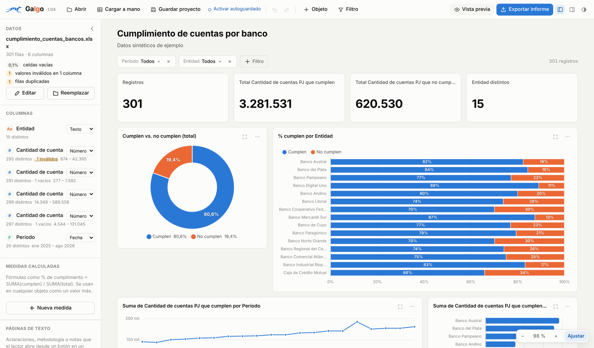
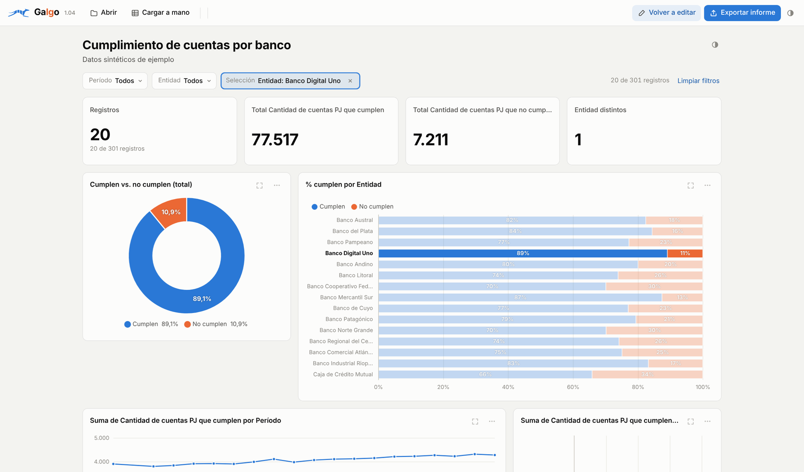
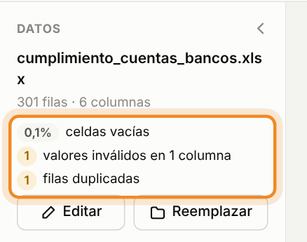
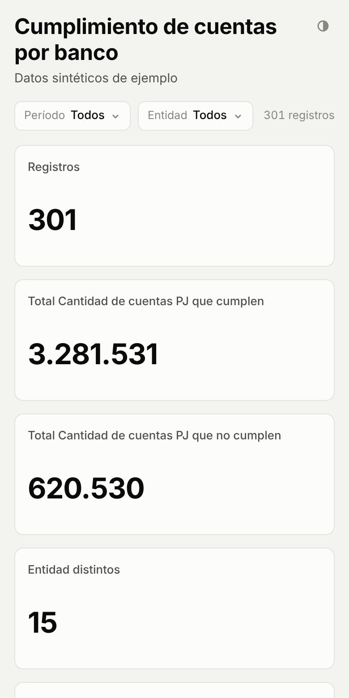
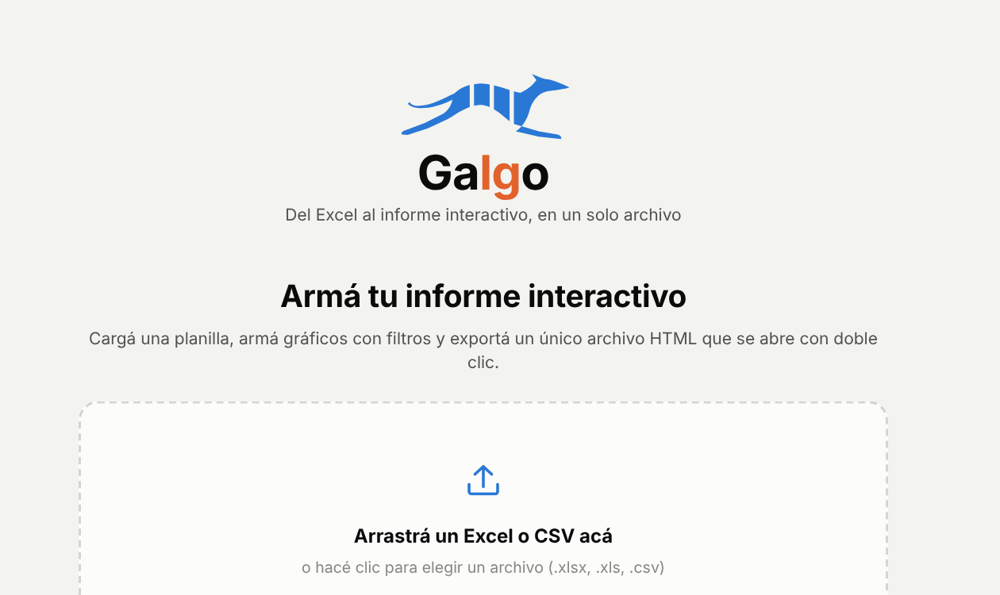
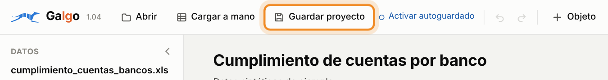
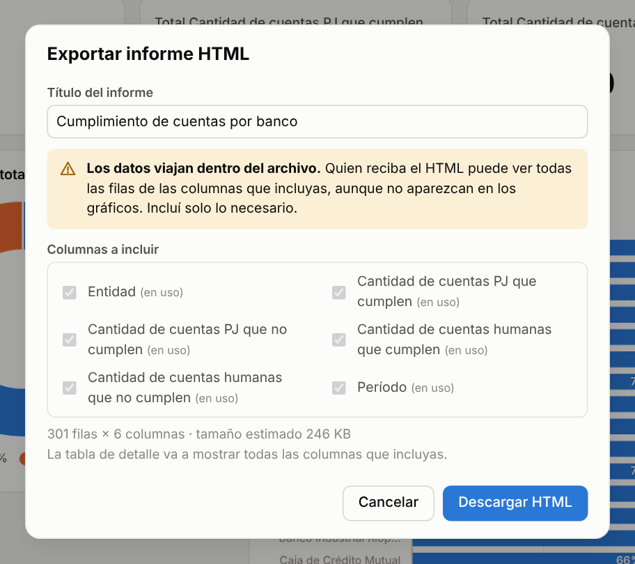
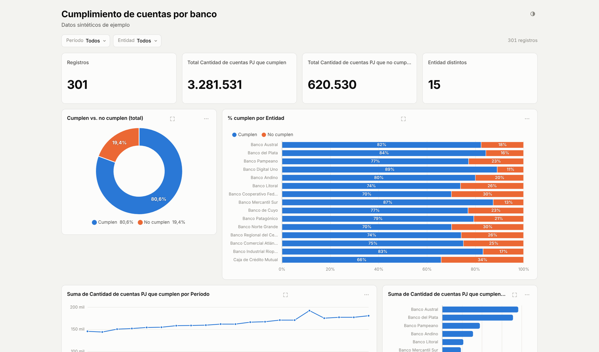

Hacé tableros fácil y compartilos sin instalar nada.
Cargás un Excel, armás el tablero con gráficos y filtros, y lo mandás como un único archivo que se abre con doble clic. Quien lo recibe puede filtrarlo y explorarlo, no solo mirarlo.
Es gratis y funciona en Chrome o Edge. Tus datos se procesan en tu computadora: no se suben a ningún servidor.
Este es un informe real hecho con Galgo. Hacé clic en un banco y mirá cómo cambia todo el tablero.
Qué hace Galgo
Lo que hoy terminás mandando como planilla o como capturas en un PowerPoint, lo mandás como un tablero que se puede usar.
Armás el tablero en minutos
Cargás un Excel o un CSV y Galgo propone un tablero con indicadores y gráficos. Después lo ajustás: agregás o quitás objetos, los movés, cambiás colores y títulos.

Quien lo recibe lo explora
Un clic en una barra, una porción o un nombre filtra todo el informe, como en Power BI. También puede usar los filtros de arriba, ampliar un gráfico o ver el detalle de los registros.

Te avisa si los datos tienen problemas
Apenas cargás el archivo, Galgo revisa celdas vacías, valores que no corresponden al tipo de la columna y filas duplicadas. Así los detectás antes de mostrar un número.

Se ve bien en el celular
El informe se acomoda a la pantalla del teléfono. Los filtros y los clics funcionan igual.

Los tres archivos que vas a usar
Galgo no se instala: todo pasa en archivos que guardás donde quieras, como cualquier documento.
La herramienta
Lo abrís con doble clic para armar o editar tableros. Es siempre el mismo archivo: guardalo en una carpeta fija.
Tu proyecto
Es tu trabajo guardado. Lo abrís desde Galgo para seguir editando otro día.
Lleva los datos adentro: no lo compartas si son sensibles.
Lo que enviás
El informe terminado. Se abre con doble clic en cualquier navegador, sin tener Galgo, y se puede filtrar pero no editar.
Cómo usarlo, paso a paso
De la planilla al informe enviado, sin vueltas.
-
Abrí Galgo
Si querés probar, tocá Probalo y se abre en el navegador. Para usarlo seguido, descargá galgo.html y abrilo con doble clic.
Si se abre en otro programa, hacé clic derecho sobre el archivo → Abrir con → Google Chrome o Microsoft Edge.
-
Cargá tus datos
Arrastrá tu Excel o CSV a la pantalla, o tocá Abrir. Galgo detecta las columnas y arma un tablero sugerido.
- La primera fila tiene que tener los nombres de las columnas.
- Si no tenés datos a mano, tocá Probar con datos de ejemplo.
-
Armá el tablero
- + Objeto agrega un indicador, un gráfico o una tabla.
- Filtro agrega un filtro arriba del tablero, por ejemplo por período.
- Hacé clic en un objeto para cambiar su configuración en el panel de la derecha.
- Arrastralo para moverlo y tirá de la esquina para cambiar su tamaño.
- Vista previa te muestra cómo lo va a ver quien lo reciba.
-
Guardá el proyecto
Tocá Guardar proyecto y elegí la carpeta. Se guarda un archivo .galgo.json con el tablero y los datos.
- Para seguir otro día, abrí Galgo y tocá Abrir → elegí tu proyecto.
- Con Activar autoguardado, Galgo guarda solo cada cambio en ese archivo.

-
Exportá el informe
Tocá Exportar informe, revisá el título y elegí qué columnas incluir. Después, Descargar HTML.
Los datos viajan dentro del informe. Si una columna no hace falta, por ejemplo un número de documento, dejala afuera.
-
Envialo
Mandá el archivo .html como cualquier adjunto: por mail, Teams, Drive o WhatsApp. Quien lo recibe lo abre con doble clic y ya puede filtrarlo.
- Por mail, si el servidor bloquea archivos .html, mandalo comprimido en .zip.
- En el celular, si se ve en blanco, tocá Abrir con → Chrome o Safari.

Preguntas frecuentes
¿Es gratis?
Sí. Podés usarlo para trabajo, estudio o uso personal, y compartir los informes que hagas sin restricciones.
¿Tengo que instalar algo?
No. Galgo es un archivo que se abre en el navegador. No necesitás permisos de administrador ni crear una cuenta.
¿Mis datos se suben a internet?
No. Todo se procesa en tu computadora, incluso cuando usás Galgo desde esta página. Los datos solo salen si vos enviás el proyecto o el informe.
¿Quien recibe el informe necesita tener Galgo?
No. El informe es un archivo independiente que se abre en cualquier navegador actual, en la computadora o en el celular.
¿Cuántos datos soporta?
Está pensado para volúmenes de una hoja de Excel. Con más datos funciona igual, pero la velocidad depende de la computadora. No es una herramienta para big data.
¿Qué navegador uso?
Chrome o Edge. En otros navegadores funciona, pero el guardado en una carpeta elegida y el autoguardado no están disponibles: los archivos se descargan.
¿Puedo editar un informe que ya envié?
Sí. Abrí Galgo, tocá Abrir y elegí el informe .html: se carga como proyecto para seguir editándolo.
Tu próximo informe, en un archivo que se puede usar.
Probalo con tus datos o con los de ejemplo. No hay que registrarse.
¡Hola! Soy Lucas, un analista de datos bastante inquieto y muy amigo de la IA (ella pone la velocidad, yo los mates 🧉).
Galgo es un proyecto personal que desarrollé con asistencia de IA.
¿Sugerencias, errores o ideas? Escribime.
Escribime en LinkedIn